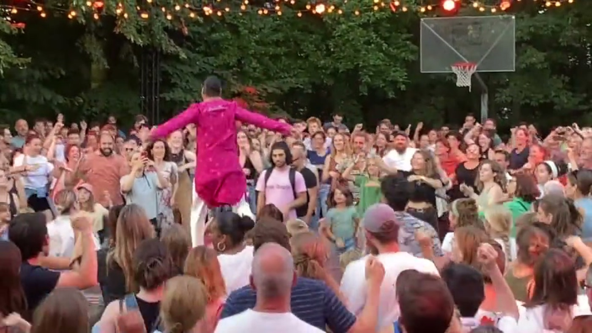

Bollywood & Bollyfolk
Film-dance joy with folk flavour — thumkas, mudras, and a room that forgets to be shy.
Open level · advanced masterclass possibleWorkshops & teaching · for schools, festivals, teams & anyone with a floor
I am Swapnil Dagliya — an Indian folk dancer, choreographer and teacher based in Ghent. I travel to teach: a taster for a school, a masterclass for trained dancers, a festival slot, a session for a team, or two to five days that build technique into choreography and end in a showcase. You bring the room and the people; I bring the dance, the music and the reason it exists.
Who is standing in front of your room
Pune gave me my first counts. New York and Florence sharpened them. Back home I ran my own studio for ten years and directed a festival for six editions. Ghent has been home since 2015 — folk first these days, and still wearing every hat that fits.
I hold a ten-form Indian folk diploma, have been in Kathak training since 2020, and am a certified yoga teacher.
What I bring
Pick one, or tell me the room and let me suggest. Every one of them works as a one-off taster and as the spine of a longer residency.
Film-dance joy with folk flavour — thumkas, mudras, and a room that forgets to be shy.
Open level · advanced masterclass possibleKathak vocabulary: footwork, hands, rhythm and chakkars, pulled along by irresistible music.
Best with some Indian dance experiencePunjab folk energy — shoulders, stamina, bounce, and a very direct route to happiness.
Open level · kids 9+ possibleGarba, Ghoomar, Kalbeliya, Lavani, Khoriya, Dalkhai, Ghantu — with lecture-demos when the room wants the story too.
Culture, rhythm, community, contextFloorwork and flow meeting Indian rhythms, gesture, Kathak patterns and phrase work.
For trained dancersHatha, vinyasa, breath and pranayama — with enough kindness for every nervous system in the room.
Open levelWhere this has already happened

Twelve cities, six countries, since 2024. Amsterdam · Antwerp · Berlin · Brussels · Eindhoven · Frankfurt · Ghent · Lille · Montpellier · Paris · Prague · Rome
Three doors that are not this one
A piece made for your dancers, your cast or your occasion — from a wedding entrance to a full stage work. Commissioned from me personally, not from a company package.
Commission a piecePrivate sessions, online or in Ghent — for a performance, a wedding, technique, or confidence on a stage you are about to walk onto.
Ask about coachingWeekly classes are not mine to sell — they run at Shoonya Dance Centre, which keeps the timetable, the prices and the registration. Go straight there:
The only thing left
The city, roughly when, how many people and what level they are. A date is welcome but not required — plenty of good things start as “sometime next spring”.
Start an invitation →It opens the enquiry form with Invite already chosen, so you only fill in what is useful.